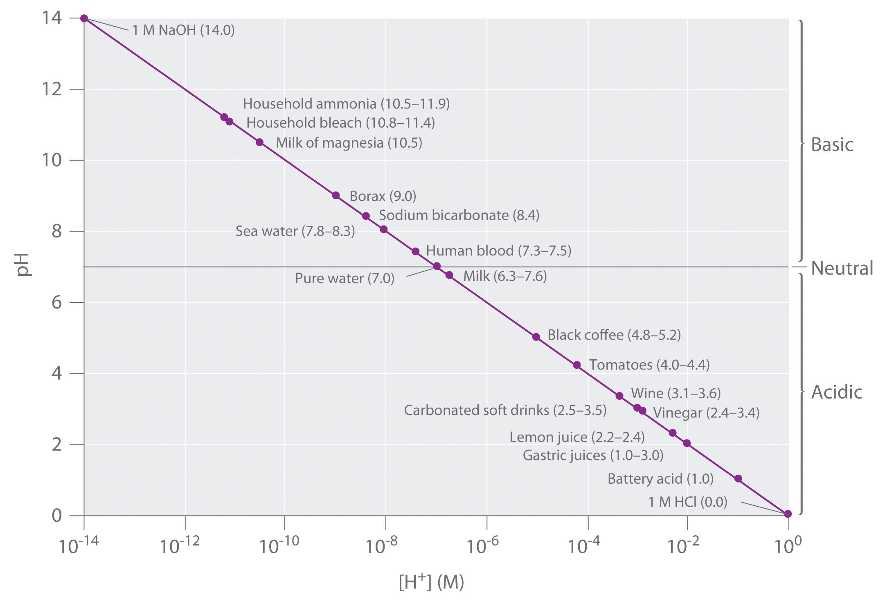

Acid–base reactions are essential in both biochemistry and industrial chemistry. Moreover, many of the substances we encounter in our homes, the supermarket, and the pharmacy are acids or bases. For example, aspirin is an acid (acetylsalicylic acid), and antacids are bases. In fact, every amateur chef who has prepared mayonnaise or squeezed a wedge of lemon to marinate a piece of fish has carried out an acid–base reaction. Before we discuss the characteristics of such reactions, let’s first describe some of the properties of acids and bases.
In Chapter 2 "Molecules, Ions, and Chemical Formulas", we defined acids as substances that dissolve in water to produce H+ ions, whereas bases were defined as substances that dissolve in water to produce OH− ions. In fact, this is only one possible set of definitions. Although the general properties of acids and bases have been known for more than a thousand years, the definitions of acid and base have changed dramatically as scientists have learned more about them. In ancient times, an acid was any substance that had a sour taste (e.g., vinegar or lemon juice), caused consistent color changes in dyes derived from plants (e.g., turning blue litmus paper red), reacted with certain metals to produce hydrogen gas and a solution of a salt containing a metal cation, and dissolved carbonate salts such as limestone (CaCO3) with the evolution of carbon dioxide. In contrast, a base was any substance that had a bitter taste, felt slippery to the touch, and caused color changes in plant dyes that differed diametrically from the changes caused by acids (e.g., turning red litmus paper blue). Although these definitions were useful, they were entirely descriptive.
The first person to define acids and bases in detail was the Swedish chemist Svante Arrhenius (1859–1927; Nobel Prize in Chemistry, 1903). According to the Arrhenius definition, an acid is a substance like hydrochloric acid that dissolves in water to produce H+ ions (protons; Equation 4.17), and a base is a substance like sodium hydroxide that dissolves in water to produce hydroxide (OH−) ions (Equation 4.18):
Equation 4.17
Equation 4.18
According to Arrhenius, the characteristic properties of acids and bases are due exclusively to the presence of H+ and OH− ions, respectively, in solution.
Although Arrhenius’s ideas were widely accepted, his definition of acids and bases had two major limitations. First, because acids and bases were defined in terms of ions obtained from water, the Arrhenius concept applied only to substances in aqueous solution. Second, and more important, the Arrhenius definition predicted that only substances that dissolve in water to produce H+ and OH− ions should exhibit the properties of acids and bases, respectively. For example, according to the Arrhenius definition, the reaction of ammonia (a base) with gaseous HCl (an acid) to give ammonium chloride (Equation 4.19) is not an acid–base reaction because it does not involve H+ and OH−:
Equation 4.19
NH3(g) + HCl(g) → NH4Cl(s)Because of the limitations of the Arrhenius definition, a more general definition of acids and bases was needed. One was proposed independently in 1923 by the Danish chemist J. N. Brønsted (1879–1947) and the British chemist T. M. Lowry (1874–1936), who defined acid–base reactions in terms of the transfer of a proton (H+ ion) from one substance to another.
According to Brønsted and Lowry, an acidA substance with at least one hydrogen atom that can dissociate to form an anion and an ion (a proton) in aqueous solution, thereby foming an acidic solution. is any substance that can donate a proton, and a baseA substance that produces one or more hydroxide ions and a cation when dissolved in aqueous solution, thereby forming a basic solution. is any substance that can accept a proton. The Brønsted–Lowry definition of an acid is essentially the same as the Arrhenius definition, except that it is not restricted to aqueous solutions. The Brønsted–Lowry definition of a base, however, is far more general because the hydroxide ion is just one of many substances that can accept a proton. Ammonia, for example, reacts with a proton to form NH4+, so in Equation 4.19, NH3 is a Brønsted–Lowry base and HCl is a Brønsted–Lowry acid. Because of its more general nature, the Brønsted–Lowry definition is used throughout this text unless otherwise specified. We will present a third definition—Lewis acids and bases—in Chapter 8 "Ionic versus Covalent Bonding" when we discuss molecular structure.
Acids differ in the number of protons they can donate. For example, monoprotic acidsA compound that is capable of donating one proton per molecule. are compounds that are capable of donating a single proton per molecule. Monoprotic acids include HF, HCl, HBr, HI, HNO3, and HNO2. All carboxylic acids that contain a single −CO2H group, such as acetic acid (CH3CO2H), are monoprotic acids, dissociating to form RCO2− and H+ (Section 4.1 "Aqueous Solutions"). Polyprotic acidsA compound that can donate more than one proton per molecule. can donate more than one proton per molecule. For example, H2SO4 can donate two H+ ions in separate steps, so it is a diprotic acidA compound that can donate two protons per molecule in separate steps., and H3PO4, which is capable of donating three protons in successive steps, is a triprotic acidA compound that can donate three protons per molecule in separate steps. (Equation 4.20, Equation 4.21, and Equation 4.22):
Equation 4.20
Equation 4.21
Equation 4.22
In chemical equations such as these, a double arrow is used to indicate that both the forward and reverse reactions occur simultaneously, so the forward reaction does not go to completion. Instead, the solution contains significant amounts of both reactants and products. Over time, the reaction reaches a state in which the concentration of each species in solution remains constant. The reaction is then said to be in equilibriumThe point at which the rates of the forward and reverse reactions become the same, so that the net composition of the system no longer changes with time.. We will return to the concept of equilibrium in more detail in Chapter 15 "Chemical Equilibrium".
We will not discuss the strengths of acids and bases quantitatively until Chapter 16 "Aqueous Acid–Base Equilibriums". Qualitatively, however, we can state that strong acidsAn acid that reacts essentially completely with water to give and the corresponding anion. react essentially completely with water to give H+ and the corresponding anion. Similarly, strong basesA base that dissociates essentially completely in water to give and the corresponding cation. dissociate essentially completely in water to give OH− and the corresponding cation. Strong acids and strong bases are both strong electrolytes. In contrast, only a fraction of the molecules of weak acidsAn acid in which only a fraction of the molecules react with water to produce and the corresponding anion. and weak basesA base in which only a fraction of the molecules react with water to produce and the corresponding cation. react with water to produce ions, so weak acids and weak bases are also weak electrolytes. Typically less than 5% of a weak electrolyte dissociates into ions in solution, whereas more than 95% is present in undissociated form.
In practice, only a few strong acids are commonly encountered: HCl, HBr, HI, HNO3, HClO4, and H2SO4 (H3PO4 is only moderately strong). The most common strong bases are ionic compounds that contain the hydroxide ion as the anion; three examples are NaOH, KOH, and Ca(OH)2. Common weak acids include HCN, H2S, HF, oxoacids such as HNO2 and HClO, and carboxylic acids such as acetic acid. The ionization reaction of acetic acid is as follows:
Equation 4.23
Although acetic acid is very soluble in water, almost all of the acetic acid in solution exists in the form of neutral molecules (less than 1% dissociates), as we stated in Section 4.1 "Aqueous Solutions". Sulfuric acid is unusual in that it is a strong acid when it donates its first proton (Equation 4.24) but a weak acid when it donates its second proton (Equation 4.25) as indicated by the single and double arrows, respectively:
Equation 4.24
Equation 4.25
Consequently, an aqueous solution of sulfuric acid contains H+(aq) ions and a mixture of HSO4−(aq) and SO42−(aq) ions but no H2SO4 molecules.
The most common weak base is ammonia, which reacts with water to form small amounts of hydroxide ion:
Equation 4.26
Most of the ammonia (>99%) is present in the form of NH3(g). Amines, which are organic analogues of ammonia, are also weak bases, as are ionic compounds that contain anions derived from weak acids (such as S2−).
Table 4.3 "Common Strong Acids and Bases" lists some common strong acids and bases. Acids other than the six common strong acids are almost invariably weak acids. The only common strong bases are the hydroxides of the alkali metals and the heavier alkaline earths (Ca, Sr, and Ba); any other bases you encounter are most likely weak. Remember that there is no correlation between solubility and whether a substance is a strong or a weak electrolyte! Many weak acids and bases are extremely soluble in water.
There is no correlation between the solubility of a substance and whether it is a strong electrolyte, a weak electrolyte, or a nonelectrolyte.
Table 4.3 Common Strong Acids and Bases
| Strong Acids | Strong Bases | ||
|---|---|---|---|
| Hydrogen Halides | Oxoacids | Group 1 Hydroxides | Hydroxides of the Heavier Group 2 Elements |
| HCl | HNO3 | LiOH | Ca(OH)2 |
| HBr | H2SO4 | NaOH | Sr(OH)2 |
| HI | HClO4 | KOH | Ba(OH)2 |
| RbOH | |||
| CsOH | |||
Classify each compound as a strong acid, a weak acid, a strong base, a weak base, or none of these.
Given: compound
Asked for: acid or base strength
Strategy:
A Determine whether the compound is organic or inorganic.
B If inorganic, determine whether the compound is acidic or basic by the presence of dissociable H+ or OH− ions, respectively. If organic, identify the compound as a weak base or a weak acid by the presence of an amine or a carboxylic acid group, respectively. Recall that all polyprotic acids except H2SO4 are weak acids.
Solution:
Exercise
Classify each compound as a strong acid, a weak acid, a strong base, a weak base, or none of these.
Answer:
Because isolated protons are very unstable and hence very reactive, an acid never simply “loses” an H+ ion. Instead, the proton is always transferred to another substance, which acts as a base in the Brønsted–Lowry definition. Thus in every acid–base reaction, one species acts as an acid and one species acts as a base. Occasionally, the same substance performs both roles, as you will see later. When a strong acid dissolves in water, the proton that is released is transferred to a water molecule that acts as a proton acceptor or base, as shown for the dissociation of sulfuric acid:
Equation 4.27
Technically, therefore, it is imprecise to describe the dissociation of a strong acid as producing H+(aq) ions, as we have been doing. The resulting H3O+ ion, called the hydronium ionThe ion, represented as , is a more accurate representation of H+(aq). For the sake of brevity, however, in discussing acid dissociation reactions, we will often show the product as H+(aq) (as in Equation 4.23) with the understanding that the product is actually the H3O+(aq) ion.
Conversely, bases that do not contain the hydroxide ion accept a proton from water, so small amounts of OH− are produced, as in the following:
Equation 4.28
Again, the double arrow indicates that the reaction does not go to completion but rather reaches a state of equilibrium. In this reaction, water acts as an acid by donating a proton to ammonia, and ammonia acts as a base by accepting a proton from water. Thus water can act as either an acid or a base by donating a proton to a base or by accepting a proton from an acid. Substances that can behave as both an acid and a base are said to be amphotericWhen substances can behave as both an acid and a base..
The products of an acid–base reaction are also an acid and a base. In Equation 4.27, for example, the products of the reaction are the hydronium ion, here an acid, and the hydrogen sulfate ion, here a weak base. In Equation 4.28, the products are NH4+, an acid, and OH−, a base. The product NH4+ is called the conjugate acidThe substance formed when a Brønsted–Lowry base accepts a proton. of the base NH3, and the product OH− is called the conjugate baseThe substance formed when a Brønsted–Lowry acid donates a proton. of the acid H2O. Thus all acid–base reactions actually involve two conjugate acid–base pairsAn acid and a base that differ by only one hydrogen ion. All acid–base reactions involve two conjugate acid–base pairs, the Brønsted–Lowry acid and the base it forms after donating its proton, and the Brønsted–Lowry base and the acid it forms after accepting a proton.; in Equation 4.28, they are NH4+/NH3 and H2O/OH−. We will describe the relationship between conjugate acid–base pairs in more detail in Chapter 16 "Aqueous Acid–Base Equilibriums".
A neutralization reactionA chemical reaction in which an acid and a base react in stoichiometric amounts to produce water and a salt. is one in which an acid and a base react in stoichiometric amounts to produce water and a saltThe general term for any ionic substance that does not have as the anion or as the cation., the general term for any ionic substance that does not have OH− as the anion or H+ as the cation. If the base is a metal hydroxide, then the general formula for the reaction of an acid with a base is described as follows: Acid plus base yields water plus salt. For example, the reaction of equimolar amounts of HBr and NaOH to give water and a salt (NaBr) is a neutralization reaction:
Equation 4.29
Acid plus base yields water plus salt.
If we write the complete ionic equation for the reaction in Equation 4.29, we see that Na+(aq) and Br−(aq) are spectator ions and are not involved in the reaction:
Equation 4.30
The overall reaction is therefore simply the combination of H+(aq) and OH−(aq) to produce H2O, as shown in the net ionic equation:
Equation 4.31
H+(aq) + OH–(aq) → H2O(l)The net ionic equation for the reaction of any strong acid with any strong base is identical to Equation 4.31.
The strengths of the acid and the base generally determine whether the reaction goes to completion. The reaction of any strong acid with any strong base goes essentially to completion, as does the reaction of a strong acid with a weak base, and a weak acid with a strong base. Examples of the last two are as follows:
Equation 4.32
Equation 4.33
Sodium acetate is written with the organic component first followed by the cation, as is usual for organic salts. Most reactions of a weak acid with a weak base also go essentially to completion. One example is the reaction of acetic acid with ammonia:
Equation 4.34
An example of an acid–base reaction that does not go to completion is the reaction of a weak acid or a weak base with water, which is both an extremely weak acid and an extremely weak base. We will discuss these reactions in more detail in Chapter 16 "Aqueous Acid–Base Equilibriums".
Except for the reaction of a weak acid or a weak base with water, acid–base reactions essentially go to completion.
In some cases, the reaction of an acid with an anion derived from a weak acid (such as HS−) produces a gas (in this case, H2S). Because the gaseous product escapes from solution in the form of bubbles, the reverse reaction cannot occur. Therefore, these reactions tend to be forced, or driven, to completion. Examples include reactions in which an acid is added to ionic compounds that contain the HCO3−, CN−, or S2− anions, all of which are driven to completion (Figure 4.14 "The Reaction of Dilute Aqueous HNO"):
Equation 4.35
Equation 4.36
Equation 4.37
Figure 4.14 The Reaction of Dilute Aqueous HNO3 with a Solution of Na2CO3

Note the vigorous formation of gaseous CO2.
The reactions in Equation 4.37 are responsible for the rotten egg smell that is produced when metal sulfides come in contact with acids.
Calcium propionate is used to inhibit the growth of molds in foods, tobacco, and some medicines. Write a balanced chemical equation for the reaction of aqueous propionic acid (CH3CH2CO2H) with aqueous calcium hydroxide [Ca(OH)2] to give calcium propionate. Do you expect this reaction to go to completion, making it a feasible method for the preparation of calcium propionate?
Given: reactants and product
Asked for: balanced chemical equation and whether the reaction will go to completion
Strategy:
Write the balanced chemical equation for the reaction of propionic acid with calcium hydroxide. Based on their acid and base strengths, predict whether the reaction will go to completion.
Solution:
Propionic acid is an organic compound that is a weak acid, and calcium hydroxide is an inorganic compound that is a strong base. The balanced chemical equation is as follows:
2CH3CH2CO2H(aq) + Ca(OH)2(aq) → (CH3CH2CO2)2Ca(aq) + 2H2O(l)The reaction of a weak acid and a strong base will go to completion, so it is reasonable to prepare calcium propionate by mixing solutions of propionic acid and calcium hydroxide in a 2:1 mole ratio.
Exercise
Write a balanced chemical equation for the reaction of solid sodium acetate with dilute sulfuric acid to give sodium sulfate.
Answer: 2CH3CO2Na(s) + H2SO4(aq) → Na2SO4(aq) + 2CH3CO2H(aq)

Stomach acid. An antacid tablet reacts with 0.1 M HCl (the approximate concentration found in the human stomach).
One of the most familiar and most heavily advertised applications of acid–base chemistry is antacids, which are bases that neutralize stomach acid. The human stomach contains an approximately 0.1 M solution of hydrochloric acid that helps digest foods. If the protective lining of the stomach breaks down, this acid can attack the stomach tissue, resulting in the formation of an ulcer. Because one factor that is believed to contribute to the formation of stomach ulcers is the production of excess acid in the stomach, many individuals routinely consume large quantities of antacids. The active ingredients in antacids include sodium bicarbonate and potassium bicarbonate (NaHCO3 and KHCO3; Alka-Seltzer); a mixture of magnesium hydroxide and aluminum hydroxide [Mg(OH)2 and Al(OH)3; Maalox, Mylanta]; calcium carbonate (CaCO3; Tums); and a complex salt, dihydroxyaluminum sodium carbonate [NaAl(OH)2CO3; original Rolaids]. Each has certain advantages and disadvantages. For example, Mg(OH)2 is a powerful laxative (it is the active ingredient in milk of magnesia), whereas Al(OH)3 causes constipation. When mixed, each tends to counteract the unwanted effects of the other. Although all antacids contain both an anionic base (OH−, CO32−, or HCO3−) and an appropriate cation, they differ substantially in the amount of active ingredient in a given mass of product.
Assume that the stomach of someone suffering from acid indigestion contains 75 mL of 0.20 M HCl. How many Tums tablets are required to neutralize 90% of the stomach acid, if each tablet contains 500 mg of CaCO3? (Neutralizing all of the stomach acid is not desirable because that would completely shut down digestion.)
Given: volume and molarity of acid and mass of base in an antacid tablet
Asked for: number of tablets required for 90% neutralization
Strategy:
A Write the balanced chemical equation for the reaction and then decide whether the reaction will go to completion.
B Calculate the number of moles of acid present. Multiply the number of moles by the percentage to obtain the quantity of acid that must be neutralized. Using mole ratios, calculate the number of moles of base required to neutralize the acid.
C Calculate the number of moles of base contained in one tablet by dividing the mass of base by the corresponding molar mass. Calculate the number of tablets required by dividing the moles of base by the moles contained in one tablet.
Solution:
A We first write the balanced chemical equation for the reaction:
2HCl(aq) + CaCO3(s) → CaCl2(aq) + H2CO3(aq)Each carbonate ion can react with 2 mol of H+ to produce H2CO3, which rapidly decomposes to H2O and CO2. Because HCl is a strong acid and CO32− is a weak base, the reaction will go to completion.
B Next we need to determine the number of moles of HCl present:
Because we want to neutralize only 90% of the acid present, we multiply the number of moles of HCl by 0.90:
(0.015 mol HCl)(0.90) = 0.014 mol HClWe know from the stoichiometry of the reaction that each mole of CaCO3 reacts with 2 mol of HCl, so we need
C Each Tums tablet contains
Thus we need Tums tablets.
Exercise
Assume that as a result of overeating, a person’s stomach contains 300 mL of 0.25 M HCl. How many Rolaids tablets must be consumed to neutralize 95% of the acid, if each tablet contains 400 mg of NaAl(OH)2CO3? The neutralization reaction can be written as follows:
NaAl(OH)2CO3(s) + 4HCl(aq) → AlCl3(aq) + NaCl(aq) + CO2(g) + 3H2O(l)Answer: 6.4 tablets
One of the key factors affecting reactions that occur in dilute solutions of acids and bases is the concentration of H+ and OH− ions. The pH scaleA logarithmic scale used to express the hydrogen ion concentration of a solution, making it possible to describe acidity or basicity quantitatively. provides a convenient way of expressing the hydrogen ion (H+) concentration of a solution and enables us to describe acidity or basicity in quantitative terms.
Pure liquid water contains extremely low but measurable concentrations of H3O+(aq) and OH−(aq) ions produced via an autoionization reaction, in which water acts simultaneously as an acid and as a base:
Equation 4.38
H2O(l) + H2O(l) ⇌ H3O+(aq) + OH−(aq)The concentration of hydrogen ions in pure water is only 1.0 × 10−7 M at 25°C. Because the autoionization reaction produces both a proton and a hydroxide ion, the OH− concentration in pure water is also 1.0 × 10−7 M. Pure water is a neutral solutionA solution in which the total positive charge from all the cations is matched by an identical total negative charge from all the anions., in which [H+] = [OH−] = 1.0 × 10−7 M.
The pH scale describes the hydrogen ion concentration of a solution in a way that avoids the use of exponential notation; pHThe negative base-10 logarithm of the hydrogen ion concentration: is defined as the negative base-10 logarithm of the hydrogen ion concentration:pH is actually defined as the negative base-10 logarithm of hydrogen ion activity. As you will learn in a more advanced course, the activity of a substance in solution is related to its concentration. For dilute solutions such as those we are discussing, the activity and the concentration are approximately the same.
Equation 4.39
pH = −log[H+]Conversely,
Equation 4.40
[H+] = 10−pH(If you are not familiar with logarithms or using a calculator to obtain logarithms and antilogarithms, consult Essential Skills 3 in Section 4.1 "Aqueous Solutions"0.)
Because the hydrogen ion concentration is 1.0 × 10−7 M in pure water at 25°C, the pH of pure liquid water (and, by extension, of any neutral solution) is
Equation 4.41
pH = −log[1.0 × 10−7] = 7.00Adding an acid to pure water increases the hydrogen ion concentration and decreases the hydroxide ion concentration because a neutralization reaction occurs, such as that shown in Equation 4.31. Because the negative exponent of [H+] becomes smaller as [H+] increases, the pH decreases with increasing [H+]. For example, a 1.0 M solution of a strong monoprotic acid such as HCl or HNO3 has a pH of 0.00:
Equation 4.42
pH = −log[1.0] = 0.00pH decreases with increasing [H+].
Conversely, adding a base to pure water increases the hydroxide ion concentration and decreases the hydrogen ion concentration. Because the autoionization reaction of water does not go to completion, neither does the neutralization reaction. Even a strongly basic solution contains a detectable amount of H+ ions. For example, a 1.0 M OH− solution has [H+] = 1.0 × 10−14 M. The pH of a 1.0 M NaOH solution is therefore
Equation 4.43
pH = −log[1.0 × 10−14] = 14.00For practical purposes, the pH scale runs from pH = 0 (corresponding to 1 M H+) to pH 14 (corresponding to 1 M OH−), although pH values less than 0 or greater than 14 are possible.
We can summarize the relationships between acidity, basicity, and pH as follows:
Keep in mind that the pH scale is logarithmic, so a change of 1.0 in the pH of a solution corresponds to a tenfold change in the hydrogen ion concentration. The foods and consumer products we encounter daily represent a wide range of pH values, as shown in Figure 4.15 "A Plot of pH versus [H".
Figure 4.15 A Plot of pH versus [H+] for Some Common Aqueous Solutions
Although many substances exist in a range of pH values (indicated in parentheses), they are plotted using typical values.
Given: molarity of acid or pH
Asked for: pH or [H+]
Strategy:
Using the balanced chemical equation for the acid dissociation reaction and Equation 4.41 or 4.40, determine [H+] and convert it to pH or vice versa.
Solution:
HClO4 (perchloric acid) is a strong acid, so it dissociates completely into H+ ions and ClO4− ions:
HClO4(l) → H+(aq) + ClO4−(aq)The H+ ion concentration is therefore the same as the perchloric acid concentration. The pH of the perchloric acid solution is thus
pH = −log[H+] = −log(2.1 × 10−2) = 1.68The result makes sense: the H+ ion concentration is between 10−1 M and 10−2 M, so the pH must be between 1 and 2.
Note: The assumption that [H+] is the same as the concentration of the acid is valid for only strong acids. Because weak acids do not dissociate completely in aqueous solution, a more complex procedure is needed to calculate the pH of their solutions, which we will describe in Chapter 16 "Aqueous Acid–Base Equilibriums".
We are given the pH and asked to calculate the hydrogen ion concentration. From Equation 4.40,
10−pH = [H+]Thus [H+] = 10−3.80 = 1.6 × 10−4 M.
Exercise
Answer:
Tools have been developed that make the measurement of pH simple and convenient (Figure 4.16 "Two Ways of Measuring the pH of a Solution: pH Paper and a pH Meter"). For example, pH paper consists of strips of paper impregnated with one or more acid–base indicatorsAn intensely colored organic molecule whose color changes dramatically depending on the pH of the solution., which are intensely colored organic molecules whose colors change dramatically depending on the pH of the solution. Placing a drop of a solution on a strip of pH paper and comparing its color with standards give the solution’s approximate pH. A more accurate tool, the pH meter, uses a glass electrode, a device whose voltage depends on the H+ ion concentration.
Figure 4.16 Two Ways of Measuring the pH of a Solution: pH Paper and a pH Meter

Note that both show that the pH is 1.7, but the pH meter gives a more precise value.
Acid–base reactions require both an acid and a base. In Brønsted–Lowry terms, an acid is a substance that can donate a proton (H+), and a base is a substance that can accept a proton. All acid–base reactions contain two acid–base pairs: the reactants and the products. Acids can donate one proton (monoprotic acids), two protons (diprotic acids), or three protons (triprotic acids). Compounds that are capable of donating more than one proton are generally called polyprotic acids. Acids also differ in their tendency to donate a proton, a measure of their acid strength. Strong acids react completely with water to produce H3O+(aq) (the hydronium ion), whereas weak acids dissociate only partially in water. Conversely, strong bases react completely with water to produce the hydroxide ion, whereas weak bases react only partially with water to form hydroxide ions. The reaction of a strong acid with a strong base is a neutralization reaction, which produces water plus a salt.
The acidity or basicity of an aqueous solution is described quantitatively using the pH scale. The pH of a solution is the negative logarithm of the H+ ion concentration and typically ranges from 0 for strongly acidic solutions to 14 for strongly basic ones. Because of the autoionization reaction of water, which produces small amounts of hydronium ions and hydroxide ions, a neutral solution of water contains 1 × 10−7 M H+ ions and has a pH of 7.0. An indicator is an intensely colored organic substance whose color is pH dependent; it is used to determine the pH of a solution.
Why was it necessary to expand on the Arrhenius definition of an acid and a base? What specific point does the Brønsted–Lowry definition address?
State whether each compound is an acid, a base, or a salt.
State whether each compound is an acid, a base, or a salt.
Classify each compound as a strong acid, a weak acid, a strong base, or a weak base in aqueous solution.
Decide whether each compound forms an aqueous solution that is strongly acidic, weakly acidic, strongly basic, or weakly basic.
What is the relationship between the strength of an acid and the strength of the conjugate base derived from that acid? Would you expect the CH3CO2− ion to be a strong base or a weak base? Why? Is the hydronium ion a strong acid or a weak acid? Explain your answer.
What are the products of an acid–base reaction? Under what circumstances is one of the products a gas?
Explain how an aqueous solution that is strongly basic can have a pH, which is a measure of the acidity of a solution.
Please be sure you are familiar with the topics discussed in Essential Skills 3 (Section 4.1 "Aqueous Solutions"0) before proceeding to the Numerical Problems.
Derive an equation to relate the hydrogen ion concentration to the molarity of a solution of a strong monoprotic acid.
Derive an equation to relate the hydroxide ion concentration to the molarity of a solution of
Given the following salts, identify the acid and the base in the neutralization reactions and then write the complete ionic equation:
What is the pH of each solution?
What is the hydrogen ion concentration of each substance in the indicated pH range?
What is the hydrogen ion concentration of each substance in the indicated pH range?
What is the pH of a solution prepared by diluting 25.00 mL of 0.879 M HCl to a volume of 555 mL?
Vinegar is primarily an aqueous solution of acetic acid. Commercial vinegar typically contains 5.0 g of acetic acid in 95.0 g of water. What is the concentration of commercial vinegar? If only 3.1% of the acetic acid dissociates to CH3CO2− and H+, what is the pH of the solution? (Assume the density of the solution is 1.00 g/mL.)
If a typical household cleanser is 0.50 M in strong base, what volume of 0.998 M strong monoprotic acid is needed to neutralize 50.0 mL of the cleanser?
A 25.00 mL sample of a 0.9005 M solution of HCl is diluted to 500.0 mL. What is the molarity of the final solution? How many milliliters of 0.223 M NaOH are needed to neutralize 25.00 mL of this final solution?
If 20.0 mL of 0.10 M NaOH are needed to neutralize 15.0 mL of gastric fluid, what is the molarity of HCl in the fluid? (Assume all the acidity is due to the presence of HCl.) What other base might be used instead of NaOH?
Malonic acid (C3H4O4) is a diprotic acid used in the manufacture of barbiturates. How many grams of malonic acid are in a 25.00 mL sample that requires 32.68 mL of 1.124 M KOH for complete neutralization to occur? Malonic acid is a dicarboxylic acid; propose a structure for malonic acid.
Describe how you would prepare 500 mL of a 1.00 M stock solution of HCl from an HCl solution that is 12.11 M. Using your stock solution, how would you prepare 500 mL of a solution that is 0.012 M in HCl?
Given a stock solution that is 8.52 M in HBr, describe how you would prepare a 500 mL solution with each concentration.
How many moles of solute are contained in each?
A chemist needed a solution that was approximately 0.5 M in HCl but could measure only 10.00 mL samples into a 50.00 mL volumetric flask. Propose a method for preparing the solution. (Assume that concentrated HCl is 12.0 M.)
Write the balanced chemical equation for each reaction.
Write the balanced chemical equation for each reaction.
A neutralization reaction gives calcium nitrate as one of the two products. Identify the acid and the base in this reaction. What is the second product? If the product had been cesium iodide, what would have been the acid and the base? What is the complete ionic equation for each reaction?
[H3O+] = [HA] M
pH = 1.402
25 mL
0.13 M HCl; magnesium carbonate, MgCO3, or aluminum hydroxide, Al(OH)3
1.00 M solution: dilute 41.20 mL of the concentrated solution to a final volume of 500 mL. 0.012 M solution: dilute 12.0 mL of the 1.00 M stock solution to a final volume of 500 mL.
The acid is nitric acid, and the base is calcium hydroxide. The other product is water.
2HNO3 + Ca(OH)2 → Ca(NO3)2 + 2H2OThe acid is hydroiodic acid, and the base is cesium hydroxide. The other product is water.
HI + CsOH → CsI + H2OThe complete ionic equations are
2H+ + 2NO3− + Ca2+ + 2OH− → Ca2+ + 2NO3− + H2O H+ + I− + Cs+ + OH− → Cs+ + I− + H2O